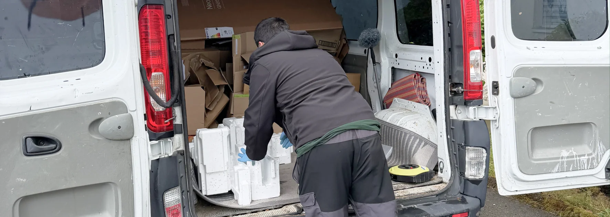

- Principe : un seul prestataire pour le débarras ET le nettoyage
- Situations concernées : décès, vente immobilière, EMS, déménagement, succession
- Avantage : un interlocuteur unique, une coordination simple, une seule facture
- Délai : intervention possible sous quelques jours, même en urgence
- Partenariat : Malo Nettoyage travaille avec Malo Débarras pour une prestation totalement intégrée
Pourquoi on existe
Il y a des moments dans la vie où vider et nettoyer un logement n'est pas qu'une question pratique. C'est souvent une charge émotionnelle et logistique qui tombe en plus de tout le reste. Personne ne devrait avoir à gérer ça seul.
Un débarras et nettoyage complet coordonné évite d'ajouter du stress à une période déjà difficile.
Les situations où l'on fait appel à nous
Chaque semaine, nous intervenons pour des familles ou des particuliers dans des situations très concrètes :
- Après un décès — vider et nettoyer le logement d'un proche, avec respect et discrétion
- Avant une vente immobilière — présenter un bien propre et vide pour maximiser les visites
- Avant ou après un déménagement — se concentrer sur la nouvelle vie, pas sur les corvées
- Départ en EMS ou en résidence — libérer le logement sans surcharge pour la famille
- Succession ou donation — gérer le contenu d'un bien avant remise aux héritiers ou à la régie

Pourquoi combiner débarras et nettoyage plutôt que tout gérer soi-même
Débarras et nettoyage sont deux métiers différents. Tenter de tout faire soi-même — ou de coordonner deux prestataires séparés — coûte du temps, de l'énergie et souvent de l'argent.
Quand les deux sont organisés ensemble dès le départ, tout s'enchaîne naturellement : d'abord le débarras, ensuite le nettoyage complet. Vous n'avez qu'un seul interlocuteur, un seul planning, une seule facture.
Comment se passe une intervention complète
- Un appel ou un message — vous nous décrivez la situation, la surface, l'état du logement
- Un devis clair sous 24h — débarras + nettoyage, tout compris, sans surprise
- On intervient — à la date qui vous convient, même en semaine, même en urgence
- Vous récupérez un logement vide et propre — prêt à être rendu, vendu ou reloué
Ce que vous n'avez pas à faire
C'est peut-être le plus important. Quand vous nous confiez un logement à vider et nettoyer, vous n'avez pas à :
- Louer un camion ou un container
- Trouver des bras pour porter les meubles
- Passer des heures à frotter des sols et des sanitaires
- Coordonner plusieurs entreprises avec des plannings différents
- Être présent sur place à chaque étape
Vous nous confiez les clés. On vous rend le logement propre et vide.
Notre zone d'intervention
Nous intervenons à Payerne et dans toute la région Broye, ainsi que dans les cantons de Vaud et Fribourg. Que ce soit pour un studio en ville ou une grande maison à la campagne, nous nous déplaçons sans frais supplémentaires dans notre zone d'activité.
FAQ – Débarras et nettoyage complet
Combien de temps prend un débarras et nettoyage complet ?
La durée dépend de la surface et du volume à évacuer. Pour un appartement standard (2 à 4 pièces), comptez 1 à 3 jours en tout : une journée pour le débarras, une à deux journées pour le nettoyage. Pour une maison entière ou un logement très chargé, le délai peut atteindre une semaine.
Que devient ce qui est débarrassé : tout est-il jeté ?
Non. Une grande partie est triée selon la filière : recyclage, dons aux associations caritatives, revente d'objets de valeur. Seul ce qui ne peut être ni réutilisé ni recyclé est éliminé en déchetterie. Cette approche limite l'impact environnemental.
Faut-il être présent pendant l'intervention ?
Pas nécessairement. Beaucoup de clients confient les clés et reçoivent ensuite des photos avant/après. Pour les situations sensibles (héritage, objets personnels), une présence en début et en fin d'intervention est cependant recommandée.
Comment est calculé le prix d'un débarras et nettoyage combiné ?
Le devis se base sur trois éléments : la surface du logement, le volume à évacuer (en m³) et l'état général. Combiner les deux prestations chez le même prestataire revient généralement moins cher que de faire appel à deux entreprises séparées.
Intervenez-vous en urgence après un décès ?
Oui. Nous comprenons que les délais peuvent être courts (vente rapide, retour des clés à la régie, succession). Nous proposons des interventions sous 48 à 72h selon nos disponibilités, en coordination directe avec votre notaire ou votre régie.
En résumé
Un débarras et nettoyage complet coordonné en une seule prestation simplifie considérablement les moments difficiles : décès, vente, EMS ou déménagement. Un seul interlocuteur, un seul planning, une seule facture. Vous récupérez un logement vide et propre, sans avoir à gérer la coordination ni les corvées physiques.